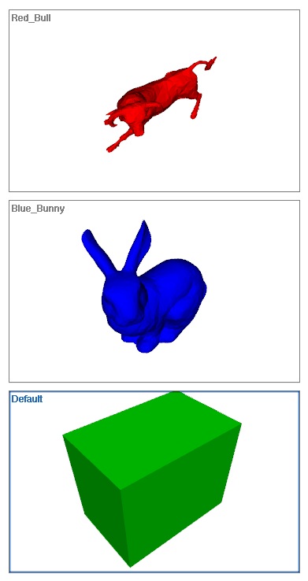

style keyword
styleId identifier Unique identifier for the style.
baseStyleId identifier Base style.
A style is a set of rules and attributes. Every rule file implicitly has a default style called Default. Thus, every rule and attribute written in a rule file automatically belongs to the default style.
Through the style statement, a new style can be defined. Every style which is not the default style has to be based on an existing style. In its simplest form, the style statement creates a new style based on the Default style. If a style has to be defined on a different style than the default style, the second form of the style statement allows to explicitly name a base style by baseStyleId. Thus the first form is completely equivalent, or just a shorthand, for style styleId extends Default.
Within a style, rules and attributes of the base style can be redefined as well as new rules and attributes can be added. Together with the import statement styles give a new design dimension for organizing your rule files.
Related
Example
Defining Styles

attr color = "#00ff00" // define "color" attribute (green)
Shape --> color(color) primitiveCube() // create a green cube
// define a new style "Blue_Bunny"
style Blue_Bunny
attr color = "#0000ff" // re-define "color" attribute (blue)
Shape --> color(color) i("bunny.obj") // creates a blue bunny
// define a new style "Red_Bull"
style Red_Bull
attr color = "#ff0000" // re-define "color" attribute (red)
Shape --> color(color) i("bull.obj") // creates a red bull